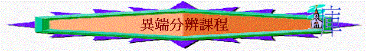

[ Home ] [ Up ] [ 異端分辨課程 ] [ 從聖經看異端 ] [ 香港基督教會 ] [ 基督復臨安息日會 ] [ 天主教 ] [ 護教學ppt ]
[ 認識道教ppt ] [認識佛教ppt ] [ 認識回教ppt ]
目的:
用講解形式, 探討異端情況
內容:
1.偏差溯源 2.大公教會(上) 3.大公教會(中) 4.大公教會(下) 5.摩門教(上) 6.摩門教(下) 7.耶和華見證人會(上) 8.耶和華見證會(下) 9.基督復臨安息日會(上) 10.基督復臨安息日會(下)
hit counter